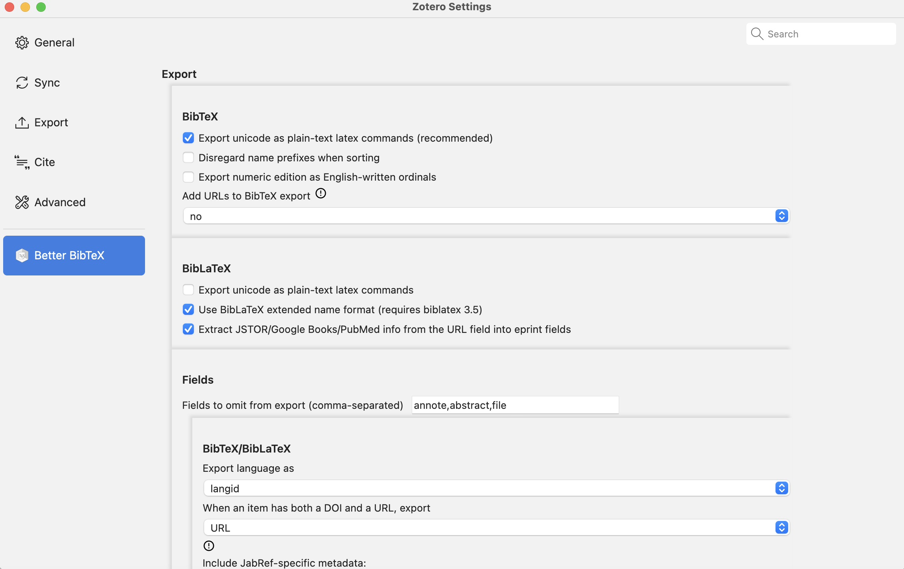
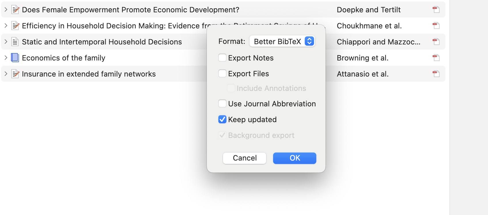
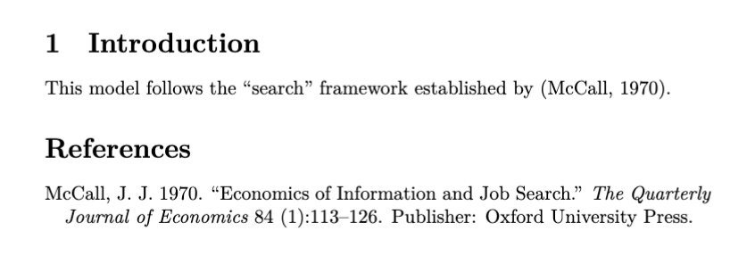

這篇文章沒什麼大道理，就是記錄一下最近摸索出的新知識。
BibTex
LaTex文件中的書目引用是透過名為BibTex的編輯器生成。基本用法是要提供一個bib file。這個檔案就像是為了這篇文章所創建的一個書櫃，放著所有可能用到的書目的資訊。當你在latex文件中提及bib file裡的某篇文章，BibTex就會去把那篇文章的資訊抓出來放加入文件中。下面是一個簡單的bib file範例。
@article{mccall_economics_1970,
title = {Economics of {Information} and {Job} {Search}},
volume = {84},
issn = {0033-5533},
abstract = {I. Introduction, 113.--II. A simple model of job search, 115.--III. A more general model of job search, 123.--IV. An adaptive search model, 125.},
number = {1},
urldate = {2024-10-26},
journal = {The Quarterly Journal of Economics},
author = {McCall, J. J.},
year = {1970},
note = {Publisher: Oxford University Press},
pages = {113--126},
file = {JSTOR Full Text PDF:/Users/hungchichao/Zotero/storage/FJSJBXUK/McCall - 1970 - Economics of Information and Job Search.pdf:application/pdf},
}書目管理系統 Zotero
要怎麼取得.bib檔呢？當然最暴力的做法可以自己創建一個文字檔手動輸入。大部分的期刊網站(e.g. JSTOR)都可以幫你生成bib file所需的格式。不過這麼做非常沒有效率。我自己（以及大部分認識的人）都是使用免費的書目管理系統Zotero。這個系統有幾個主要功能：
- 在系統中創建不同資料夾搜集參考文獻
- 提供瀏覽器的外掛，讓你直接把網路上看到的paper加入資料庫
- 自動下載pdf，可以瀏覽文件與做筆記
- 自動輸出bib file
其中第四個功能大大降低了我們編輯latex中引用書目的門檻。（其實Zotero也可以搭配Microsoft Word使用，不過我不會用word寫論文就是）。
要安裝Zotero非常簡單，只要到官網下載就行了。同時要打開瀏覽器的Zotero外掛(這是我很久以前設定的，網路上有非常多如何使用Zotero的教學)。
Better BibTex
Zotero雖然強大，但在輸出bib file上還是稍微缺乏彈性。我們可以下載Better Bibtex這個Zotero的plug-in。Better BibTex可以做到幾件原本做不到的事：
- 自訂citation key：Zotero自動生成的citation key似乎有可能發生重複的問題，或是有時候你就是想自己訂citation key。Better BibTex可以當你做到這點。
- 選擇bib file中需要的field： 原始的Zotero會自動把所有資訊都放入bib file，其中有些非常沒必要，例如abstract(誰會特別打開.bib看abstract?)。Better BibTex 可以自己設定需要排除的field，讓bib file保持一個極簡風。
- 自動更新：當你把新文章加入資料庫時，自動幫你更新bib file，這樣就不用一直按輸出。
使用Better Zotero可以參考這個YouTube影片。


Bibliography Style
雖然關聯不是很緊密，不過我還是順便紀錄一樣如何在Latex中進行引用。首先需要使用處理引用書目的套件，我使用的是natbib。接著設定ibliographystyle，我使用aer bibliography style。aer 顧名思義就是美國經濟學會發行的American Economics Review所使用的格式，據說跟Chicago style比較接近（我無法驗證就是）。事實上經濟學的主流期刊都有自己的style可以用，例如Econometrics的ecta與Journal of Political Economy 的jpe。關於各種style詳情可以參考這個網站。此例中我從zotero輸出的bib file叫做labor_ref.bib，只要把這個檔案放在與本文相同資料夾中並在結尾處加上\bibliography{bib file name}即可。以下是一個非常簡單的例子。
\documentclass{article}
\usepackage{natbib}
\bibliographystyle{aer}
\title{Labor II: Model Proposal}
\author{R13323021 Hung, Chi-Chao}
\date{Octobor 2024}
\begin{document}
\maketitle
\section{Introduction}
This model follows the ``search" framework established by \citep{mccall_economics_1970}.
\bibliography{labor_ref}
\end{document}
在本地端執行BibTex
我一開始在本地端complie的時候，無論如何citation都跑不出來。經過研究才發現原來我誤解了BibTex的運作原理。事實上，當你在一篇latex文章中加入引用時，發生的事情如下：
當你按下complie的時候，你使用的編輯器（通常是pdflatex或xelatex）會先將所有的引用資訊記錄在一個auxiliary file(name.aux)。接著，BibTex會去讀取這個aux file, bib file跟所需的.bst file(記錄你選擇的style的設定)，生成出一個.bbl的檔案，這時候要再實行一次（或兩次）的pdflatex將.bbl的資訊讀進去，才會顯示出引用書目。
我之前都是在Overleaf上編輯，Overleaf會自動幫你處理好這一切，所以我從來都沒有意識到背後這些運作。不過在本地端的編輯器(我使用的是Visual Studio Code)他並不一定知道你要執行BibTex。解決方法就是在VScode LaTex Workshop裡面build LaTex project底下選擇正確的recipe（例如 pdflatex -> bibtex -> pdflatex*2），VScode就會正確執行所有步驟了。